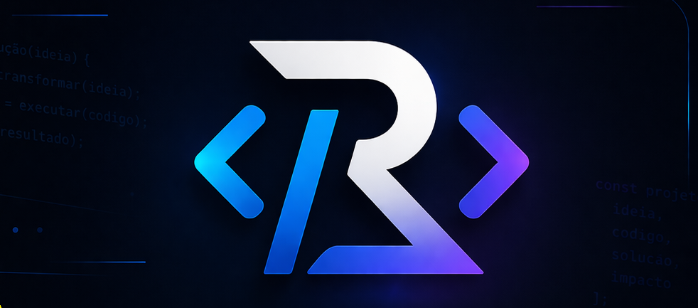

projetosrb
SOBRE O CRIADOR · TRAJETÓRIA & FORMAÇÃO
{ criador: 'Rodrigo Barbosa', paixão: 'educação & tecnologia', visão: 'inovação' }
Rodrigo Barbosa
● Carregando idade...
43 9.9930-7234
barbosa.rodrigo.1979@gmail.com
Siqueira Campos - Paraná - Brasil · Tecnologia & Educação
📖 Trajetória & Propósito
Profissional com sólida formação em Ciência da Computação e Sistemas de Informação,
unindo tecnologia, criatividade e educação. Atualmente cursando Licenciatura em Computação para
potencializar o ensino do pensamento computacional e desenvolvimento de soluções inovadoras.
Idealizador do portfólio projetosrb, onde ideias se transformam em código e resultados reais.
"IDEIAS EM CÓDIGO. SOLUÇÕES EM AÇÃO."
🎓 Formação Acadêmica
💻 Ciência da Computação
📅 2002 – 2006
Fundamentos de algoritmos, engenharia de software, estruturas de dados e visão sistêmica para criação de soluções tecnológicas robustas.
📊 Sistemas de Informação
📅 2007 – 2012
Gestão de processos, análise de sistemas, banco de dados e estratégias para alinhar TI aos objetivos organizacionais.
🧑🏫 Licenciatura em Computação
📅 2024 – Atualmente
Formação pedagógica e metodologias ativas para o ensino da computação na educação básica, pensamento computacional e práticas inovadoras.
🚀 Projetos em Destaque
✦ Cartilhas Pedagógicas Scratch (1º ao 9º ano)
✦ Netmax Fibra – reconstrução de portal institucional
✦ projetosrb – portfólio de soluções e inovação educacional
✦ Futuros horizontes: novas tecnologias, gamificação e IA aplicada à educação.
✦ Netmax Fibra – reconstrução de portal institucional
✦ projetosrb – portfólio de soluções e inovação educacional
✦ Futuros horizontes: novas tecnologias, gamificação e IA aplicada à educação.
💡 Filosofia de Trabalho
Código limpo, experiência do usuário, acessibilidade e paixão por ensinar.
Acredito que o pensamento computacional é ferramenta essencial para formar cidadãos críticos e criativos.
“A tecnologia move o mundo, mas é a educação que transforma vidas. Cada linha de código pode abrir novos horizontes.”
Rodrigo Barbosa
Rodrigo Barbosa